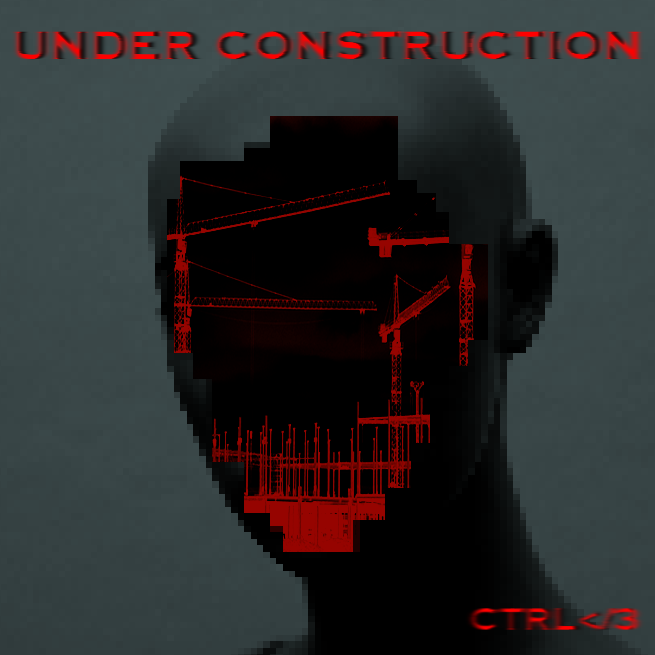
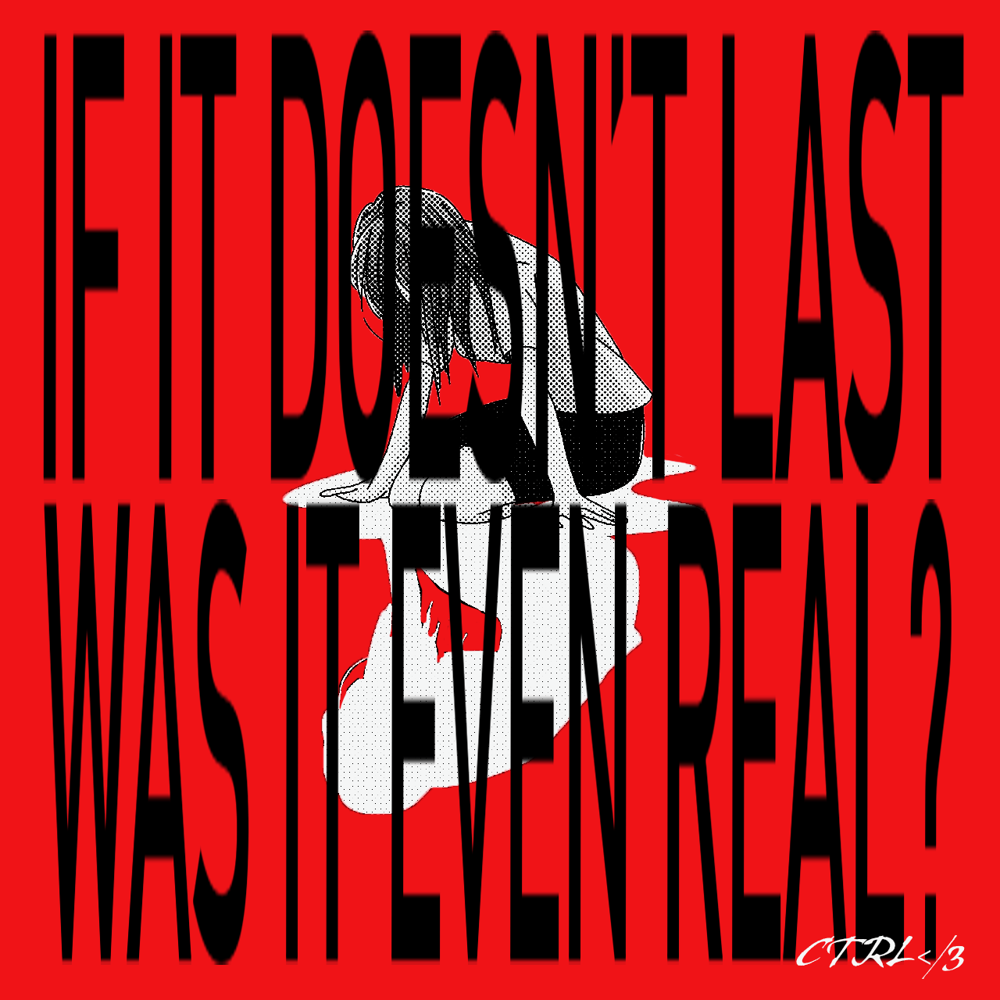
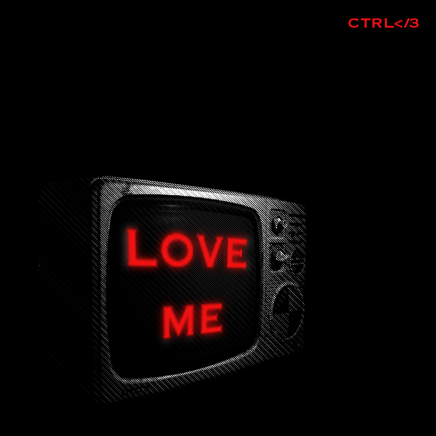
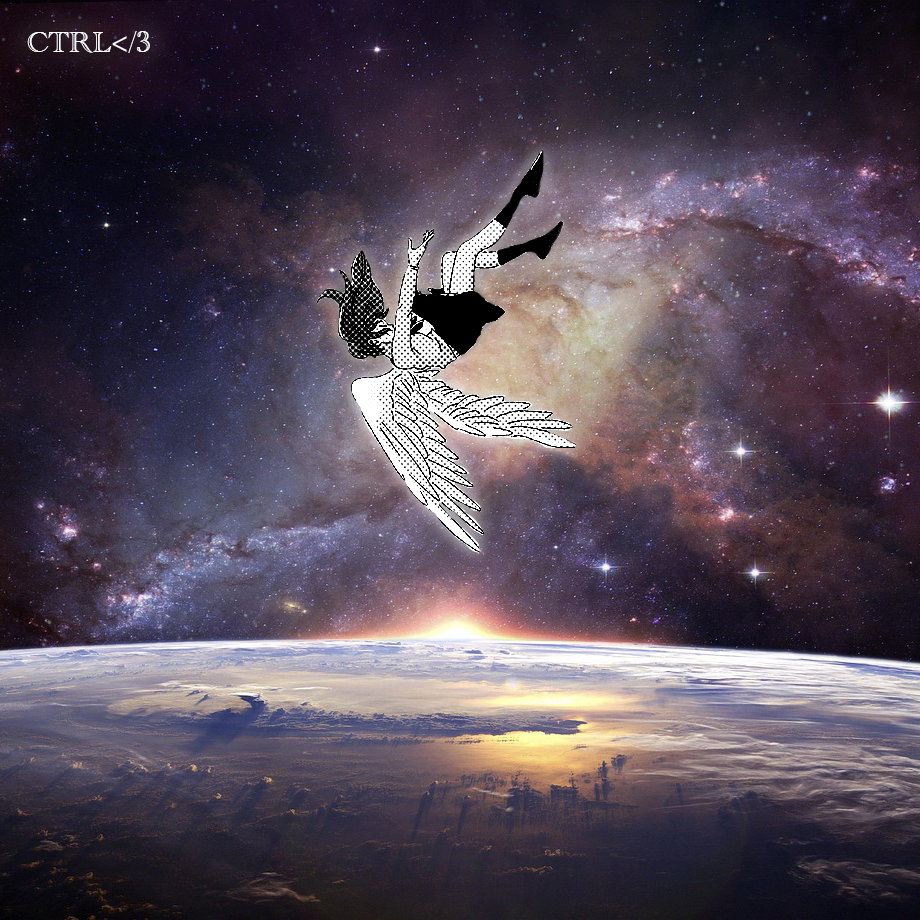
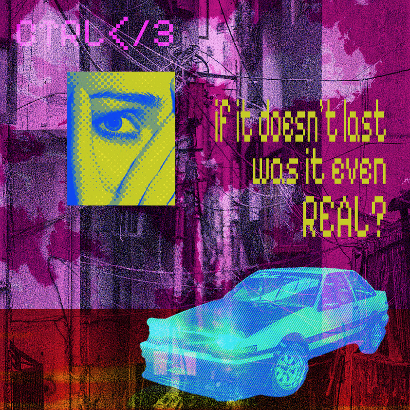
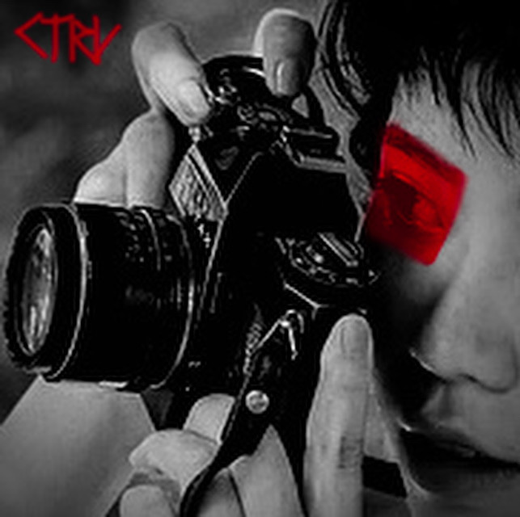
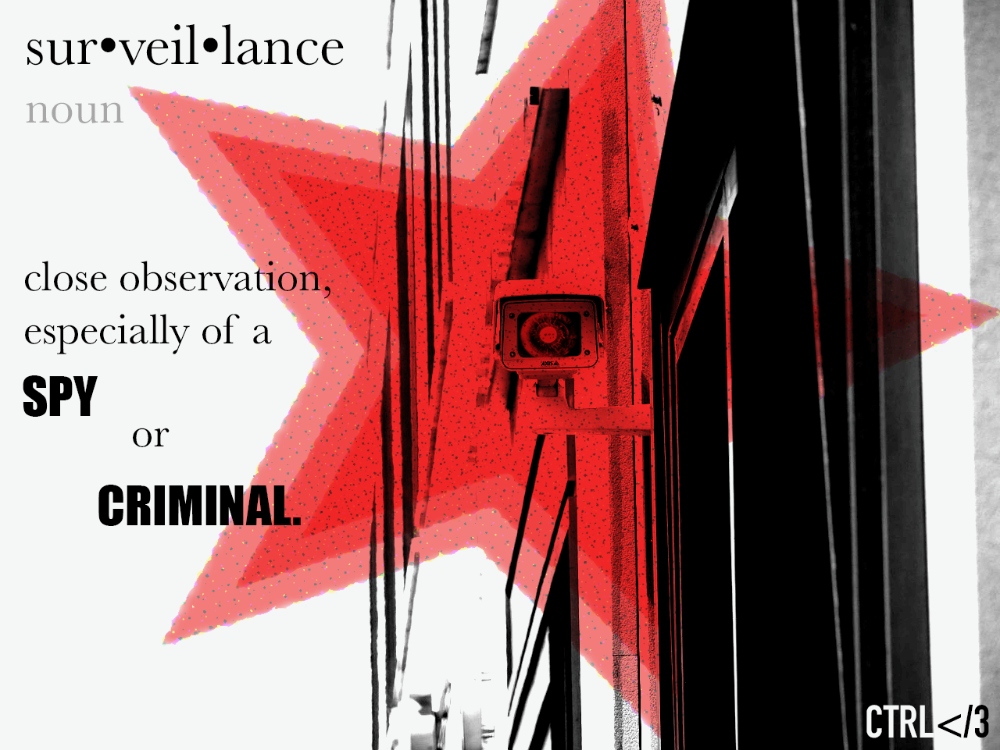

Artist Statement:
What does it mean to Control Heartbreak?
Controlling Heartbreak is allowing yourself to feel everything, good and bad, to create something new. It’s about taking your anxieties, insecurities, and failures, and reworking them into something to be proud of. CTRL<3 is loud and messy but also muted and clean, it’s the visualization of complex emotions in many form. By combing human emotions and digital media through artwork, music, video and clothing, CTRL<3 is authentically human.